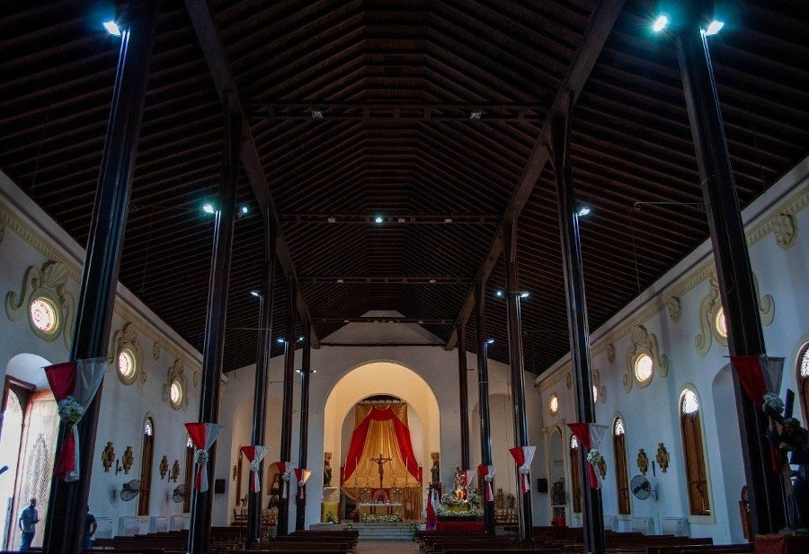

Solemne Ordenación Sacerdotal en la Catedral Metropolitana
El Arzobispo Mons. José Luis Azuaje presidió la Eucaristía en la que tres nuevos presbíteros fueron ordenados.

Portal oficial de la Arquidiócesis de Maracaibo, una Iglesia en salida al encuentro de más de 2 millones de fieles zulianos en comunión y esperanza.
Navegue por las distintas áreas de servicio que ofrecemos a nuestra comunidad con transparencia y compromiso evangelizador.

Mensajes, homilías, cartas pastorales y la labor del Excmo. Mons. José Luis Azuaje Ayala.
Encuentre su parroquia, horarios de misas y contactos de todos los templos.
Discernimiento y formación de los futuros pastores de nuestra Iglesia.
auto_awesomeConozca las órdenes religiosas en el Zulia.
Código de conducta y directrices para la protección de menores y personas vulnerables.
Ver protocolo open_in_newSostenga nuestras obras de caridad.
"Somos una Iglesia en salida, llamados a ir al encuentro de cada persona con el amor de Dios, a ser puentes de esperanza en nuestra tierra zuliana."
Solemne Eucaristía presidida por nuestro Arzobispo en el templo Catedral.
Jornada de capacitación para sacerdotes, catequistas y animadores de la Zona Pastoral N° 1.
Día del Papa. Oración comunitaria por las intenciones del Santo Padre.
El Arzobispo Mons. José Luis Azuaje presidió la Eucaristía en la que tres nuevos presbíteros fueron ordenados.

Jóvenes delegados de todas las zonas se reunieron para orar, compartir y planificar la labor evangelizadora.

Más de 500 kits fueron distribuidos en sectores vulnerables del oeste de la ciudad en una nueva jornada.
Apoye el clero diocesano, la formación de seminaristas y las múltiples obras sociales dirigidas a las familias más desprotegidas del estado Zulia.
Hacer una Donación